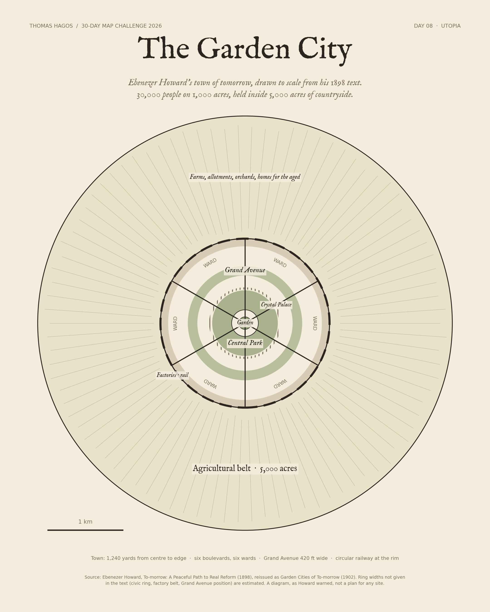

30-Day Map Challenge / Day 08 / Utopia
The Garden City
Ebenezer Howard’s town of tomorrow, drawn to scale from his 1898 text. 30,000 people on 1,000 acres, held inside 5,000 acres of countryside.

Howard’s numbers
| Whole estate | 6,000 acres |
| Town | 1,000 acres · 1,240 yards to the edge |
| Agricultural belt | 5,000 acres |
| Central Park | 145 acres |
| Grand Avenue | 420 ft wide |
| Boulevards | six, 120 ft wide |
| Population | 30,000 town · 2,000 farmland |
Source: Ebenezer Howard, To-morrow: A Peaceful Path to Real Reform (1898), reissued as Garden Cities of To-morrow (1902). Ring widths the text does not give are estimated. Howard called his drawings diagrams, not plans for any real site. Code and method.